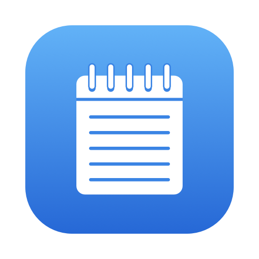
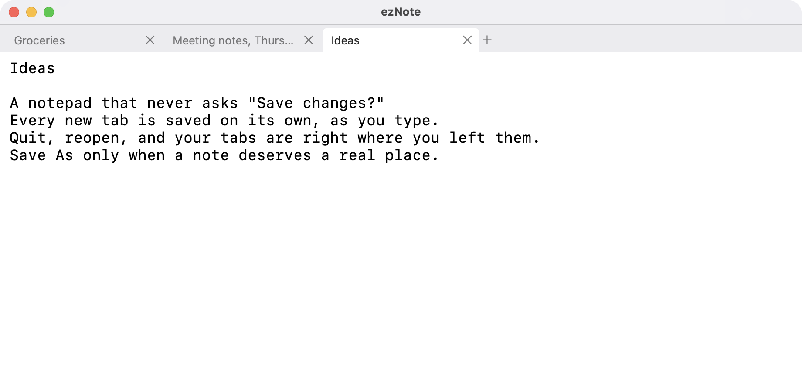
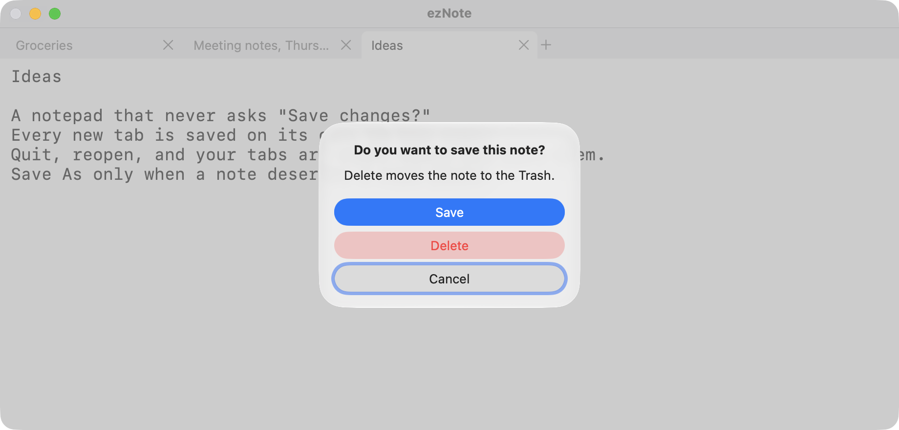

ezNoteOpen a tab and type. Every note saves itself as you write. Quit whenever you like; your tabs are right where you left them.

ezNote is as simple as the Windows Notepad, with tabs, and without the questions.
~/Documents/ezNote, written to disk as you type. No file name, no location, no Save button.Press + or ⌘T and start typing. The tab takes its name from the first line.
Switch apps, quit, restart your Mac. Each note is already on disk; nothing waits for a Save.
When a note earns a real home, use Save As. Done with a note? Close the tab and choose Delete.

ezNote asks something only when you close a tab that still has text in it. Empty tabs just go away.
Quitting never asks. Whatever you were writing is there when you come back.
All of this lives in code you can read: the tab and file rules are in Sources/NotepadCore, covered by unit tests. See the source on GitHub.
Signed and notarized by Apple. Open the disk image and drag ezNote to Applications. Requires macOS 14 Sonoma or later, on Apple silicon or Intel.
Get the latest release